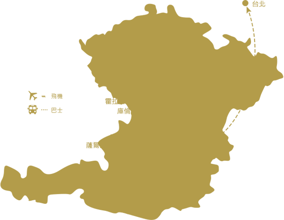

2019新春特別企劃【中越峴港悅椿渡假村5天】
第二人-10000 特惠39,000起
邁向14周年促銷，每周三&五出發
原價 31,900，第二人 -6,000(含稅簽)
售價 |
出發日期 |
|---|---|
319,00 |
4.5.6月早鳥促銷，每周三&五出發
原價 31,900，第二人 -8,000(含稅簽)
售價 |
出發日期 |
|---|---|
319,00 |
|
329,00 |
|
339,00 |
行程路線
行程亮點
1.年代旅遊年代旅遊年代旅遊年代旅遊年代旅遊年代旅遊年代旅遊年代旅遊年代旅遊年代旅遊年代旅遊年
2.年代旅遊年代旅遊年代旅遊年代旅遊年代旅遊年代旅遊年代旅遊年代旅遊年代旅遊年代旅遊年代旅遊年
3.年代旅遊年代旅遊年代旅遊年代旅遊年代旅遊年代旅遊年代旅遊年代旅遊年代旅遊年代旅遊年代旅遊年
特色行程
嚴選
飯店
Banyan Tree Lang Co
悅榕庄蘭珂度假村
鄰近三大世界自然遺產 - 順化、會安和美山的Lang Co 蘭珂海灣，中越昔日的寧靜漁村，有著原始純淨的海岸線與熱帶山林，現由悅榕庄集團打造世界渡假村 - Lanuna Lang Co拉古娜蘭珂渡假村。舉凡住宿、高爾夫、美饌、特色旅遊一應俱全。Banyan Tree Lang Co 蘭珂悅榕庄就在這美麗迷人的蘭珂海灣之上，是拉古娜蘭珂渡假村中最奢華的渡假飯店之一。
房型介紹
Lagoon Pool Villa 潟湖泳池別墅
(131平方公尺/約39.6坪)
每棟別墅仿照順化王朝建築規格，採用陶土斜瓦屋頂、開放式庭園，內部設計融合越南傳統美學與現代風格，深紫色系的精緻家俱、隨處可見蓮花圖案、絲綢刺繡，使用竹、藤、棕櫚等可再生建材製成的藝術品，展現兼具環保與時尚的舒適空間。
倚在私人泳池畔欣寧靜的潟湖，徐徐吹來的海風彷彿抹去時間的進行，與最親愛的伴侶盡情享受渡假的悠閒，一起遠眺夕陽西下的美景、滿天星斗的浪漫時刻。 使用竹、藤、棕櫚等可再生建材製成的藝術品，展現兼具環保與時尚的舒適空間。
SPA設施
Banyan Tree Spa Lang Co 蘭珂悅榕 Spa 中心
(開放時間10:00-22:00)
屢獲殊榮的蘭珂悅榕 spa 提供全方位的療程，撫慰您的身體與心靈。悠然靜謐的自然環境與傳統優雅建築融為一體，打造舒適高雅的 spa 境地；採用天然成份的芳香精油、有機藥草，承襲百年技法的專業芳療師讓您徹底地放鬆，恢復青春活力。
然環境與傳統優雅建築融為一體，打造舒適高雅的 spa 境地；採用天然成份的芳香精油、有機藥草，承襲百年技法的專業芳療師讓您徹底地放鬆，恢復青春活力。
景點
安排
會安古城
2019峴港必去旅遊景點，峴港、會安、順化、巴拿山、蘭珂悅椿渡假村，旅遊體驗勝過北越下龍灣 ... 蘭珂悅榕庄 一望無際的海洋與純淨無暇的美景時時映入眼簾。坐擁綿延三公里長的迷人海灘、背倚層巒相疊的安南山脈，僅有49棟全為泳池別墅的蘭珂悅 ..別墅的蘭珂悅 ..別墅的蘭珂悅 ..別墅的蘭珂悅 ..別墅的蘭珂悅 ..別墅的蘭珂悅 ...
★會安古城
2019峴港必去旅遊景點，峴港、會安、順化、巴拿山、蘭珂悅椿渡假村，旅遊體驗勝過北越下龍灣 ... 蘭珂悅榕庄 一望無際的海洋與純淨無暇的美景時時映入眼簾。坐擁綿延三公里長的迷人海灘、背倚層巒相疊的安南山脈，僅有49棟全為泳池別墅的蘭珂悅 ...美景時時映入眼簾。坐擁綿延三公里長的迷人海灘、背倚層巒相疊的安南山脈
★會安古城
2019峴港必去旅遊景點，峴港、會安、順化、巴拿山、蘭珂悅椿渡假村，旅遊體驗勝過北越下龍灣 ... 蘭珂悅榕庄 一望無際的海洋與純淨無暇的美景時時映入眼簾。坐擁綿延三公里長的迷人海灘、背倚層巒相疊的安南山脈，僅有49棟全為泳池別墅的蘭珂悅 ...美景時時映入眼簾。坐擁綿延三公里長的迷人海灘、背倚層巒相疊的安南山脈
★會安古城
2019峴港必去旅遊景點，峴港、會安、順化、巴拿山、蘭珂悅椿渡假村，旅遊體驗勝過北越下龍灣 ... 蘭珂悅榕庄 一望無際的海洋與純淨無暇的美景時時映入眼簾。坐擁綿延三公里長的迷人海灘、背倚層巒相疊的安南山脈，僅有49棟全為泳池別墅的蘭珂悅 ...美景時時映入眼簾。坐擁綿延三公里長的迷人海灘、背倚層巒相疊的安南山脈
餐食
饗宴
餐食推薦
板橋美食推薦、板橋餐廳懶人包完成囉，大家最愛的板橋車站美食(含板橋大遠百美食)、 ... 詳細文章：布娜飛比利時啤酒餐廳｜假日有駐唱易爆滿，在地夯店餐點美味，不用訂位，來餐廳就能用親民價格，享受我們最受歡迎的肉丸及鮭魚等傳統瑞典風味的餐飲，滿足全家人的胃口與味蕾！瑞典美食區還有更多美味食材，讓你帶回 .
★推薦餐食
板橋美食推薦、板橋餐廳懶人包完成囉，大家最愛的板橋車站美食(含板橋大遠百美食)、 ... 詳細文章：布娜飛比利時啤酒餐廳｜假日有駐唱易爆滿，在地夯店餐點美味，不用訂位，來餐廳就能用親民價格，享受我們最受歡迎的肉丸及鮭魚等傳統瑞典風味的餐飲，滿足全家人的胃口與味蕾！瑞典美食區還有更多美味食材，讓你帶回 .
特色行程
-
去程 15：40
起程地點：桃園 → 峴港
抵達時間：第一天 17：15
航空公司：捷星太平洋航空
航班編號：BL141
-
去程 15：40
起程地點：桃園 → 峴港
抵達時間：第一天 17：15
航空公司：捷星太平洋航空
航班編號：BL141
天數 |
啟程 / 抵達地點 |
啟程 / 抵達時間 |
航空公司 |
航班 |
|
|---|---|---|---|---|---|
第一天 |
桃園 → 峴港 |
15：40 → 17：15 |
捷星太平洋航空 |
BL141 |
|
第五天 |
峴港 → 桃園 |
11：00 → 14：35 |
捷星太平洋航空 |
BL140 |
捷星航空公司包機直飛-僅需3小時
以下為本行程預定的航空班機及飛航路線，實際航班以團體確認的航班編號與飛行時間為準。
因應國際油價波動，航空公司隨機票所增收燃油附加費用，會隨國際油價而有所調整。
每日行程
第 2 天
順化一日遊【順化京城、紫禁城(世界文化遺產→含三輪車)東巴市場→啟定皇陵→天姥寺→香江游船) 或 享用飯店設施(海上劃艇 射擊 越式劃船 飯店內免費活動) 】
★【順化京城古都巡禮】
越南阮朝十三代皇宮～紫禁城，於1993年被聯合國科教文組織認定為世界文化遺產。約1000公尺四方的皇宮王城，內外共分為三層，最外為護城，寬21米高7米，周長共有10公里，開有十道門，並有護城河圍繞，城內有龐大的宮殿、內有午門、太和殿、寺廟及花園、橋樑等古建築群體。第二層為文武百官與皇室居所，周長為2400米，共有4個門，以南向的午門為正門，經由午門和參道後，可直抵太和殿。
★【啟定皇陵】：相傳阮朝皇帝在位時即開始替自己死後建造的安居之所，此為啟定皇帝耗費11年歲月建築而成的身後居所，西洋式的建築配有馬賽克的裝飾，處處可見到其深受法國殖民的影響，然而從皇陵的建築、設計更可以看出當時末代皇帝的性格特色。
★【靈姥寺】：此寺建於香江畔的山丘上，寺前有福緣塔於1844年由阮朝第三位皇帝啟定皇帝所建，塔右側有碑石閣、左側有六角閣，塔後聖殿則供奉三寶佛。其所在位置據說為龍脈之首，不僅地理風水好連風景視野都是上乘之選。
早餐飯店內享用
午餐LaPines餐廳
晚餐宮廷餐廳
住宿越南蘭珂悅椿渡假村 Angsana Lang Co
售價明細
出發日 |
天數 |
價格 |
包含 |
機位 |
|---|---|---|---|---|
2/3 (日) |
5 |
|
稅 簽證 小費 |
|
2/5 (二) |
5 |
|
稅 簽證 小費 |
|
2/6 (三) |
5 |
|
稅 簽證 小費 |
|
2/7 (四) |
5 |
|
稅 簽證 小費 |
【售價包含內容】
★ 來回直飛經濟艙團體機票
★ 雙人房住宿共四晚(不指定房型)
★ 行程所列之交通、餐食、景點門票等各項費用
★ 500萬契約責任險暨20萬意外醫療險
★ 二地機場稅、燃油費 <不變相加價>
★ 越南30日效期觀光一次簽證
【售價不包含內容】
★ 中華民國護照新辦費用
★ 電話費、行李超重費、床頭小費與相關服務人員小費支出
★ 行程所未列出之私人行為消費
★ 不含導遊服務費/每人每天NT$200元，共新台幣NT$1,000元/人
備註
※懷孕旅客不建議使用SPA，若有上述狀況，請主動告知您的旅遊專員，以利為您做最妥善的安排。
※旅客繳交『機位及訂房作業金』後依您指定之旅館訂出，但需以旅館回覆確認為主，若適逢您所選擇的旅館客滿，本公司得以無條件退還作業金，相對作業金於機位及訂房皆確認後立即轉為正式訂金。
※行程及餐食將依飯店確認順序做調整，為保障您的權利及行程餐食完整性，旅行社及飯店保有順序調整的權利。
※請特別注意，國外飯店常會有《押金入住》的規定： 當您check in時，飯店會要求收取押金(現金或刷卡，刷卡則是一張空白帳單)，當您退房時務必取回現金或當場撕毀刷卡單。
【簽證】
越南不含例假日所需工作天要六天應備資料：
※護照"正本"或"清晰的影本"(護照正本效期需６個月以上)、彩色２吋相片二張。
※依據越南政府頒訂簽證申請流程，申請簽證旅客須填寫基本資料表，並由代辦旅行社將資料送達越南簽證處。(2014.03開始實施)
※持以下５個國家的護照可免辦越簽：印尼、新加坡、泰國、馬來西亞、日本，除此之外一律都要辦越簽。〔越簽處隨時會有所調整，恕不另外通知〕
※持外籍護照（例：美國、加拿大..等）之外籍人士入境越南，需準備：護照正本效期６個月以上（一定要正本）、彩色２吋相片兩張。
【安全守則】
※外交部為提供國人多元服務管道，強化旅外國人急難救助機制，民眾可利用智慧型手機或平版電腦下載安裝『旅外救助指南』APP程式，相關資訊可至該部領事事務局網站(WWW.BOCA.GOV.TW)查詢。
為了您在本次旅遊途中本身的安全，我們特別請您遵守下列事項，這是我們應盡告知的責任，也是保障您的權益。
★１：安全之溫馨小提示★
1-1：搭乘飛機時，請聽從空服員指示並隨時扣緊安全帶，以免亂流影響安全。
1-2：住宿飯店時請隨時將房門扣上安全鎖，以策安全；勿在燈上晾衣物；勿在房間內吸煙，聽到警報器響，請由緊急出口迅速離開。
1-3：貴重物品可託放至飯店或房間內保險箱，如需隨身攜帶切勿離手，若於離座時將證照或錢包放在餐桌座位上，很容易讓扒手得逞。
1-4：切勿在公共場合露財，也請勿當眾清點鈔票，避免遭有心人士側目。
1-5：遵守觀光景點、餐廳、飯店、遊樂設施等各種場所公告之注意事項。
1-6：切勿於泳池開放以外之時間或無合格救生人員陪同之情況下擅入泳池、海灘或任何戲水之區域與場所，以免溺水或遭遇其他危險。
1-7：搭乘任何形態之船隻請務必「全程」穿著救生衣，航程中並請握緊扶手或坐穩，切勿任意走動與站立，以免造成您與他人的危險。
1-8：海邊或泳池嘻戲請勿超越安全警戒線、或進入超乎您水性範圍之深水區。
1-9：任何活動若具有刺激性，建議身體或體能狀況不佳之旅客切勿冒險參加。
1-10：車輛行進時請勿站立走動，頭手勿伸出窗外，上下車時注意來車方向，以免發生危險。
1-11：搭乘任何交通工具或出入場所時，請依序進入並聽從工作人員指揮。
1-12：若您途中要離隊、夜間或自由活動時間須自行外出，請務必通知領隊或您的團友，並約定返回時間，同時請留意各項安全指示，以免發生意外。
1-13：旅客若入住有私人泳池之房型，請務必留意自身安全，防止受傷或溺水等意外事件發生。
1-14：水上活動提醒注意:請參團貴賓於實施水上活動等自由活動時間,務必配合下列事項:(1)須穿著救生衣並遵守各項活動安全規定(2)請務必使用本公司所指定之當地水上活動業者,切勿因價格低廉而自行挑選非本公司指定之水上活動業者,以避免產生消費爭議導致您的權益受損(3)參團旅客如於水上活動或自由活動期間,遇有任何問題,請第一時間聯絡領隊及導遊,協助處理。
1-15：領隊導遊不得擅自提供醫療用品，因此請自行準備個人習慣性藥品、感冒藥、胃腸藥、暈車藥等(依個人需要準備)，有宿疾者請自行攜帶所須之藥品。旅途中若有任何不適，請立即通知領隊導遊陪同您就醫診療。
1-16：請依個人習慣自行攜帶牙膏、牙刷、洗髮精、沐浴乳、室內拖鞋、口罩、手電筒、雨傘(機場通關時不可放於隨身行李)、防曬乳、太陽眼鏡、刮鬍刀、照相機、轉接插頭、生理用品、帽子、泳衣等私人用品。
1-17：即便是同團團友、領隊或導遊提出之要求，亦不應接受託帶行李，以防因挾帶如毒品、槍械等違禁品，觸犯法律。
1-18：旅客須遵守台灣及當地法律規定，勿進行任何違反法律的行為(例如吸毒、嫖妓、走私、於禁煙場所吸煙等等)，旅客若因違法衍生之法律責任與罰緩，本公司不負任何賠償之責任。
1-19：請妥善保管護照、證件及個人貴重物品，請勿放於巴士、旅館、房間內以及大行李中，並謹防扒手及陌生人搭訕。
1-20：鞋子：女子請不要穿高跟鞋，也請不要穿新鞋，最好穿著涼鞋、平底休閒鞋或球鞋；請攜帶２雙鞋方便替換。
1-21：服裝：建議參觀廟宇都著褲裝，因為多處需爬往高處；某部分廟宇需穿著過膝褲子且上衣不可為無袖;因早晚氣侯變化大可著薄長袖。
★２：台灣通關之溫馨小提示★
2-1：出境時，台幣現金不超過60,000元；外幣總值不得超過美金5,000 元(旅行支票及匯票不計)。
2-2：中華民國政府規定自民國87年10月1日起，不得自海外攜帶新鮮水果入境，若違反規定除水果被沒收外將處3萬至5萬元罰款。
2-3：旅客攜帶動植物及其產品入境檢疫須知，為了您通關順利，請勿攜帶動植物及其產品。禁止旅客攜帶的動物及其產品分列如下
活體動物：犬、貓、兔、禽鳥、鼠等。
動物產品：生鮮、冷凍、冷藏肉類及其製品(如香腸、肉乾、貢丸、餛飩、烤鴨等)、含肉加工品(速食麵、雞湯、含肉晶粉等)、蛋品、鹿茸、血清等生物樣材等，包含已煮熟、乾燥、加工、真空包裝處理之產品。
新鮮水果、土壤、附著土壤或有害活生物之植物。
活昆蟲或有害生物。
自疫區轉運之植物及植物產品。
自民國97年10月1日起，入境旅客攜帶動植物或其產品，如未主動向關稅局申報或未向動植物防疫檢疫局申請檢疫而被查獲者，除處新臺幣3,000元以上罰鍰外，如有違規情節重大者並將移送法辦。下機至出關途中請旅客主動將動植物產品丟入農畜產品棄置箱，配合檢疫偵測犬隊執行行李檢查。
旅客檢疫相關規定，可參考【行政院農業委員會動植物防疫檢疫局】網頁之「出入境旅客檢疫注意事項」專區。
2-4：為維護飛航安全,自2007年3月1日起，凡我國搭乘國際線班機(含國際包機)之出境、轉機及過境旅客隨身所攜帶之液體、膠狀及噴霧類物品實施管制所有旅客隨身攜帶之液體膠狀及噴霧類物品其體積不得超過100毫升，並要放入不超過1公升且可重覆密封之透明塑膠袋內。袋子需能完全密封。旅客攜帶旅行中所必要但未符合前述限量規定之嬰兒奶粉(牛奶)、嬰兒食品、藥品、糖尿病或其他醫療所需之液體膠狀及噴霧類物品，經向安全檢查人員申報，並獲得同意後，可不受前項規定的限制。出境或過境(轉機)旅客在機場管制區或前段航程於機艙內購買或取得前述物品可隨身上機，但需包裝於經籤封防止調包及顯示有效購買證明之塑膠袋內。為使安檢線之X光檢查儀有效，前述之塑膠袋應與其他手提行李、外套或手提電腦分開通過X光檢查。
2-5：行李～國際段以一大件不超過20公斤（如超重一公斤要支付約NT300費用）及手提行李一小件為原則。
★3：免稅品之溫馨小提示★
3-1：免稅物品(免申報)之範圍及數量：
a. 最多1公升酒類。任何含有酒精成份，不管是固體或液體，或調和後會變成含酒精成份的物質
b. 煙類包括雪茄、香煙、煙草，不管是抽的、嚼的，香煙不能超過200支，雪茄、煙草不能超過500公克或總重量不得超過500公克。
※ 請注意:
a. 酒類及香煙都是管控物品，旅客如果攜帶超過以上規定數量又無法出示合法許可證明，所攜物品將遭舉報並全數沒收，並處以重罰。
b. 同一團體如有購買香煙或酒，請各自購買取得收據，請勿交給同一個人攜帶，應在規定的數量內，分別各自攜帶入出關。
C. 古董及保育類動物嚴禁輸出。
★疾病檢疫★
a. 出國前可上疾病管制署網站查詢國際疫情資訊，若前往流行病疫區時，請於出國前4至6週至「旅遊醫學門診」由醫師評估接種疫苗或服用藥物之需求；旅途中或返國途中如出現發燒、嘔吐、腹瀉、皮膚出疹、黃疸等症狀時，請於返國時向機場檢疫人員通報；因傳染病有潛伏期，如回國後出現上述不適症狀，應儘速就醫，並告知醫師近期旅遊史，做為診斷及治療之參考。
b. 相關國際疫情、防治措施及全國12家旅遊醫學門診相關資訊，請參閱該局全球資訊網(http://www.cdc.gov.tw)「入出境健康管理」專區查詢，或1922（國外可撥+886-800-001922）防疫專線洽詢。
【電話】
1. 人在[台灣]，打電話到越南：
台灣國際冠碼(002)＋越南國碼(84)＋當地區域號碼＋電話號碼
2. 人在[越南]，打電話回台灣家中：
越南國際冠碼(00)＋台灣國碼(886)＋台灣區域號碼＋台北家中電話
人在越南，打電話回台北家中,台北區域號碼(不須撥0) + 台北家中電話 00 + 886 + 2 + 台北家中電話
人在越南，打電話回台灣的行動電話, + 台灣國碼 + 行動電話(不須撥第一位數字0) 00 + 886 + 932......
【電壓時差】
電壓：220伏特，兩孔圓形插座。
氣候：北越〔河內〕一年有四季，氣溫與台灣四季相似，服裝可參考台灣。
南越〔胡志明〕一年四季都是夏季氣候，建議帶件薄外套即可。
時差：越南比臺灣慢1小時。